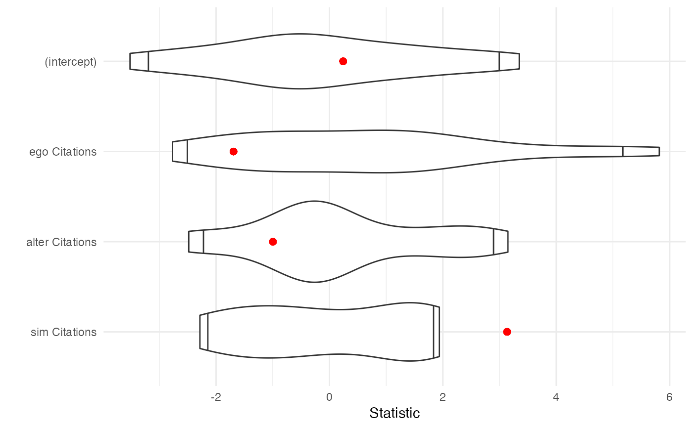

This function provides an implementation of the multiple regression quadratic assignment procedure (MRQAP) for both one-mode and two-mode network linear models. It offers several advantages:
it works with combined graph/network objects such as igraph and network objects by constructing the various dependent and independent matrices for the user.
it uses a more intuitive formula-based system for specifying the model, with several ways to specify how nodal attributes should be handled.
it can handle categorical variables (factors/characters) and interactions intuitively.
it relies on {furrr} for parallelising
and {progressr}
for reporting progress to the user,
which can be useful when many simulations are required.
results are {broom}-compatible,
with tidy() and glance() reports to facilitate comparison
with results from different models.
Note that a t- or z-value is always used as the test statistic,
and properties of the dependent network
-- modes, directedness, loops, etc --
will always be respected in permutations and analysis.
network_reg(
formula,
object,
method = c("qap", "qapy"),
times = 1000,
strategy = "sequential",
verbose = FALSE
)A formula describing the relationship being tested. Several additional terms are available to assist users investigate the effects they are interested in. These include:
ego() constructs a matrix where the cells reflect the value of
a named nodal attribute for an edge's sending node
alter() constructs a matrix where the cells reflect the value of
a named nodal attribute for an edge's receiving node
same() constructs a matrix where a 1 reflects
if two nodes' attribute values are the same
dist() constructs a matrix where the cells reflect the
absolute difference between the attribute's values
for the sending and receiving nodes
sim() constructs a matrix where the cells reflect the
proportional similarity between the attribute's values
for the sending and receiving nodes
tertius() constructs a matrix where the cells reflect some
aggregate of an attribute associated with a node's other ties.
Currently "mean" and "sum" are available aggregating functions.
'ego' is excluded from these calculations.
See Haunss and Hollway (2023) for more on this effect.
dyadic covariates (other networks) can just be named
An object of a migraph-consistent class:
matrix (adjacency or incidence) from {base} R
edgelist, a data frame from {base} R or tibble from {tibble}
igraph, from the {igraph} package
network, from the {network} package
tbl_graph, from the {tidygraph} package
A method for establishing the null hypothesis. Note that "qap" uses Dekker et al's (2007) double semi-partialling technique, whereas "qapy" permutes only the $y$ variable. "qap" is the default.
Integer indicating number of simulations used for quantile estimation.
(Relevant to the null hypothesis test only -
the analysis itself is unaffected by this parameter.)
Note that, as for all Monte Carlo procedures, convergence is slower for more
extreme quantiles.
By default, times=1000.
1,000 - 10,000 repetitions recommended for publication-ready results.
If {furrr} is installed,
then multiple cores can be used to accelerate the function.
By default "sequential",
but if multiple cores available,
then "multisession" or "multicore" may be useful.
Generally this is useful only when times > 1000.
See {furrr} for more.
Whether the function should report on its progress.
By default FALSE.
See {progressr} for more.
Krackhardt, David. 1988. “Predicting with Networks: Nonparametric Multiple Regression Analysis of Dyadic Data.” Social Networks 10(4):359–81. doi:10.1016/0378-8733(88)90004-4 .
Dekker, David, David Krackhard, and Tom A. B. Snijders. 2007. “Sensitivity of MRQAP tests to collinearity and autocorrelation conditions.” Psychometrika 72(4): 563-581. doi:10.1007/s11336-007-9016-1 .
Other models:
tests
networkers <- ison_networkers %>% to_subgraph(Discipline == "Sociology")
model1 <- network_reg(weight ~ alter(Citations) + sim(Citations),
networkers, times = 20)
# Should be run many more `times` for publication-ready results
tidy(model1)
#> # A tibble: 3 × 4
#> term estimate statistic p.value
#> <chr> <dbl> <dbl> <dbl>
#> 1 (intercept) -8.47 -0.839 0.7
#> 2 alter Citations -0.125 -0.791 0.55
#> 3 sim Citations 44.9 3.68 0.05
glance(model1)
#> # A tibble: 1 × 8
#> r.squared adj.r.squared sigma statistic p.value df df.residual nobs
#> <dbl> <dbl> <dbl> <dbl> <dbl> <dbl> <int> <int>
#> 1 0.0575 0.0505 49.0 8.20 0.000349 2 269 272
plot(model1)
